Broadcast packages and reporting for NHK WORLD-JAPAN.
Myanmar's top diplomat joins the ASEAN foreign ministers' meeting, testing the bloc's approach to the junta after its election.
Myanmar joins ASEAN foreign ministers meeting
Thai police detain a Japanese national accused of leading a Cambodia-based scam operation, part of the widening regional crackdown on fraud networks.
Thai police detain Japanese leader of scam group based in Cambodia
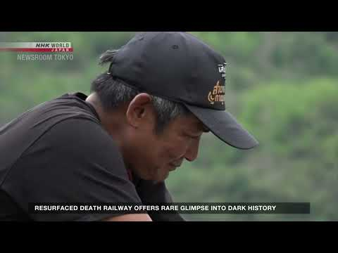
▶ VIDEOA resurfaced section of the WWII-era Death Railway offers a rare glimpse into one of the darkest chapters of Thailand's wartime history.
Resurfaced Death Railway offers rare glimpse into dark history
Coverage of the Thai foreign minister's visit to post-election Myanmar and what it signals for Bangkok's role as a broker with the junta.
Thai foreign minister visits Myanmar
How Thai diners' appetite for Japanese food has grown far beyond sushi — and how restaurants are scrambling to keep up with demand for variety.
Thailand's fans of washoku crave variety
Inside Bangkok's Death Fest, where a rapidly aging Thailand confronts mortality through end-of-life planning workshops and death-positive events.
Thailand's Death Fest event encourages end-of-life planning
Twenty Thai crew members arrive home after their cargo ship was attacked near the Strait of Hormuz, caught in the region's shipping crisis.
20 Thai crew repatriated after cargo ship attacked near Strait of Hormuz
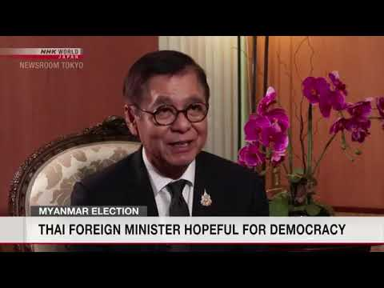
▶ VIDEOThailand's foreign minister voices cautious hope for Myanmar's democratic transition in an interview following the country's election.
FM Sihasak hopeful for democracy in Myanmar after election
Two decades after Anocha Panjoy vanished into North Korea's abduction program, her family is still pressing Pyongyang for answers.
20 years on, Thai abductee's family still awaiting answers from North Korea
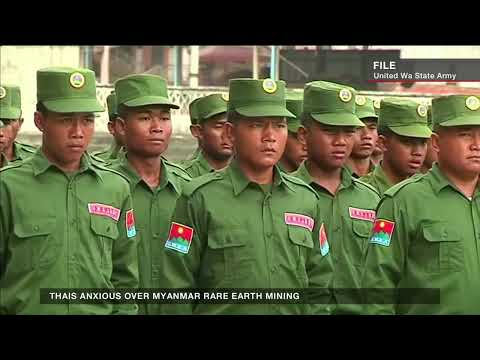
▶ VIDEOAn investigation tracking the Myanmar–China rare-earth supply chain — a five-fold export surge and its toxic fallout on Mekong communities downstream.
Thais anxious over Myanmar rare earths
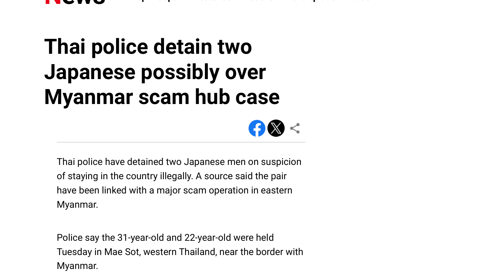
PDFThai police detain two Japanese men linked to a major scam operation in eastern Myanmar, held on immigration charges as the investigation widens.
Thai police detain two Japanese possibly over Myanmar scam hub case
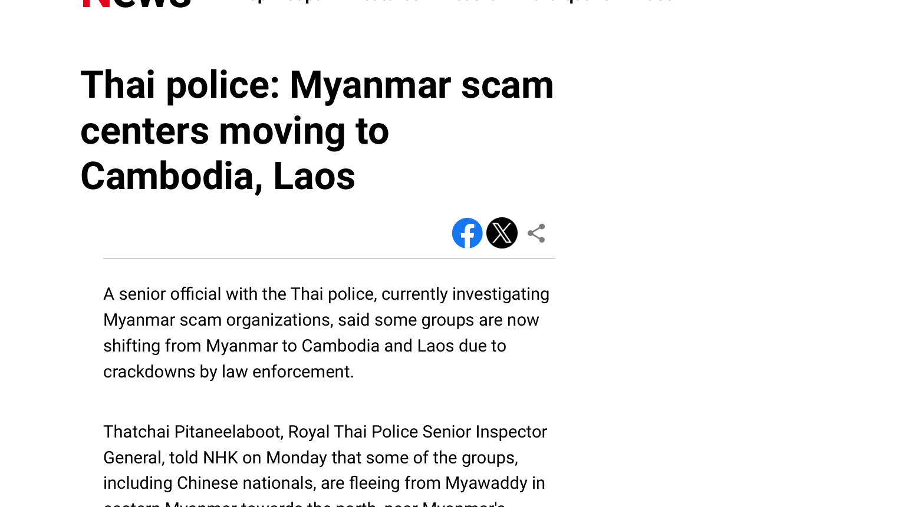
PDFRoyal Thai Police Senior Inspector-General Thatchai Pitaneelaboot tells NHK that crackdowns are pushing scam groups out of Myanmar into Cambodia and Laos.
Thai police: Myanmar scam centers moving to Cambodia, Laos
First-person testimony from international victims trafficked into scam compounds along the Thai–Myanmar borderlands.
International victims caught up in scam centers along Thai-Myanmar borderlands
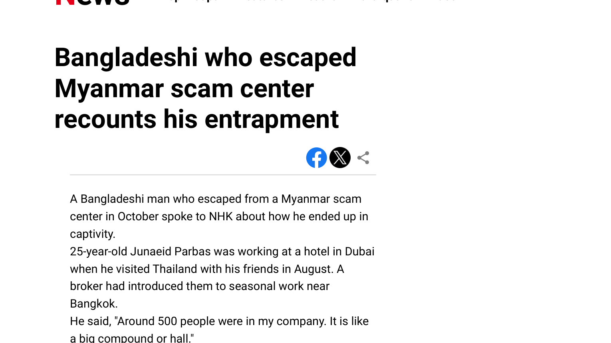
PDFA 25-year-old Bangladeshi survivor recounts how a broker's job offer in Thailand ended in captivity inside a Myanmar scam compound — and how he escaped.
Bangladeshi who escaped Myanmar scam center recounts his entrapment
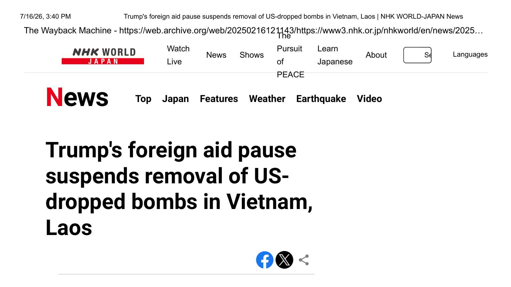
PDFWashington's foreign-aid freeze halts the clearance of unexploded American ordnance still killing people in Laos and Vietnam.
Trump's foreign aid pause suspends removal of US-dropped bombs in Vietnam, Laos
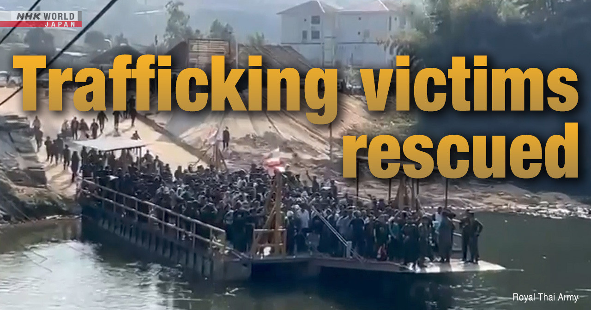
How foreigners are lured to Myanmar-based fraud compounds and forced to run online scams — reported through survivor accounts.
Foreigners forced to work in Myanmar-based fraud rings
Wire reporting from Bangkok for a global audience.
Thailand seats a new cabinet under PM Paetongtarn Shinawatra, mixing fresh faces with familiar names from the political dynasties.
After the king's endorsement, Thailand has a new Cabinet but with some familiar faces
Parliament elects Thaksin's youngest daughter Paetongtarn Shinawatra as Thailand's youngest-ever prime minister, extending the Shinawatra dynasty.
Thaksin's daughter Paetongtarn Shinawatra is elected Thailand's prime minister
Analysis of Thailand's Constitutional Court and its record of dissolving elected governments — and what that means for Thai democracy.
Thai courts that have disbanded multiple governments are accused of setting back democracy
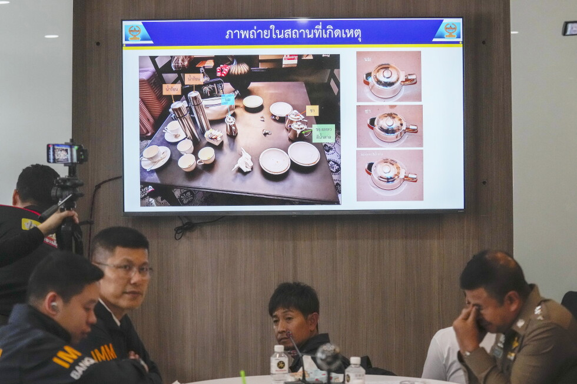
Six people found dead in a Bangkok Grand Hyatt suite were poisoned with cyanide, forensic tests confirm, in a case that gripped the region.
Traces of cyanide are found in the blood of Vietnamese and Americans found dead in a Bangkok hotel
Julian Assange pleads guilty in a Saipan courtroom in a deal with the US Justice Department, ending a years-long legal saga and securing his freedom.
WikiLeaks' Assange pleads guilty to publishing US military secrets in deal that secures his freedom
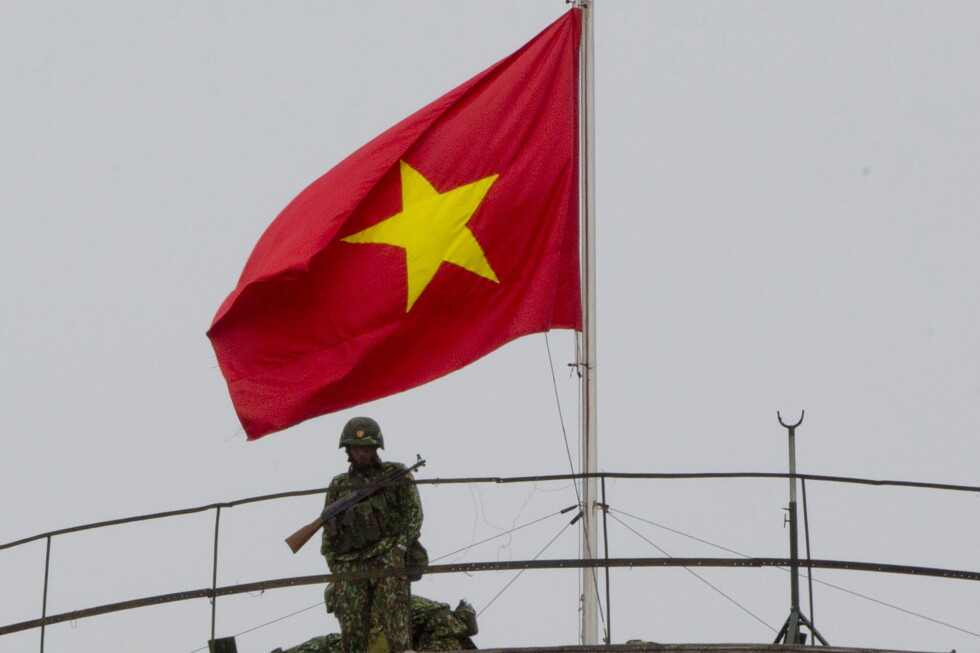
Rights groups urge Thailand not to extradite a Vietnamese activist who they warn faces persecution if sent home.
Rights groups urge Thailand not to extradite Vietnamese activist, saying he's at risk if sent home
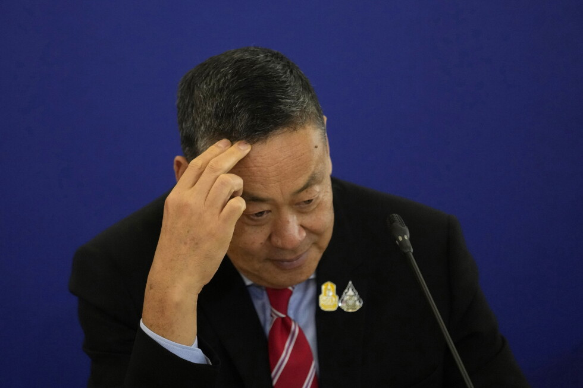
The Constitutional Court accepts a petition that could unseat PM Srettha Thavisin over a controversial cabinet appointment.
The Constitutional Court of Thailand agrees to hear a case that could imperil the prime minister
Survivors describe the seconds of violent turbulence that killed one passenger and put twenty in intensive care.
'Sheer terror': Passengers describe turbulence-hit flight that put 20 in intensive care
Passengers from the turbulence-stricken Singapore Airlines flight reach Singapore after the emergency landing in Bangkok.
Most of passengers from battered Singapore Airlines jetliner arrive in Singapore from Bangkok
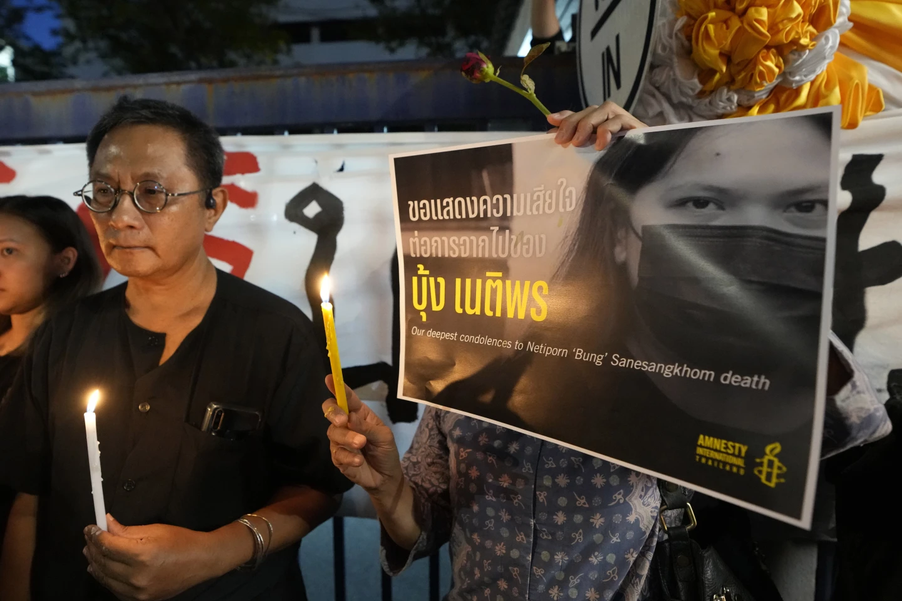
Monarchy-reform activist Netiporn 'Bung' Sanesangkhom dies in detention after a months-long hunger strike, reigniting debate over lèse-majesté detentions.
A monarchy reform activist in Thailand dies in detention after a monthslong hunger strike
Reporting for The Nation (Thailand).
Binance's CEO predicts Bitcoin will hit $80,000 as the crypto market rebounds from its long winter.
Binance CEO sees Bitcoin soaring to $80,000 this year
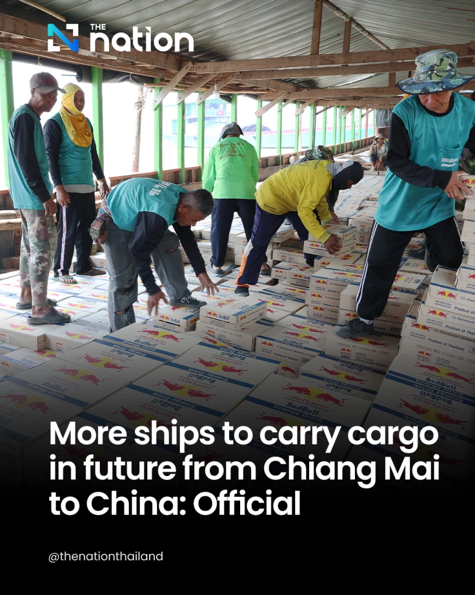
Officials expect a surge in cargo traffic from northern Thailand to China through the Mekong's Chiang Saen Port.
Increase in northern Thai ship traffic to China is coming: Official
Thaksin's return from exile ignites a parole debate and reshuffles Thailand's political landscape.
Thaksin's homecoming: Parole debate and political fallout
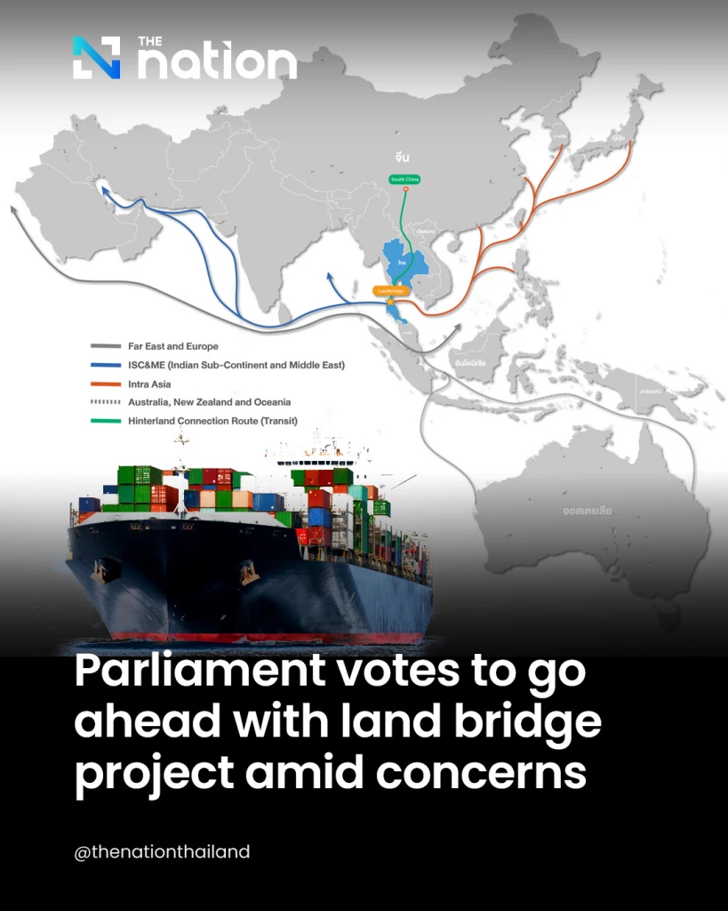
Parliament endorses the Southern land-bridge megaproject despite environmental and cost concerns.
Land bridge project gets the nod from Parliament despite concerns
Police arrest a journalist and a photographer over their coverage of protest graffiti, raising press-freedom alarms in Thailand.
Police arrest journalist, photographer over coverage of graffiti in March 2023
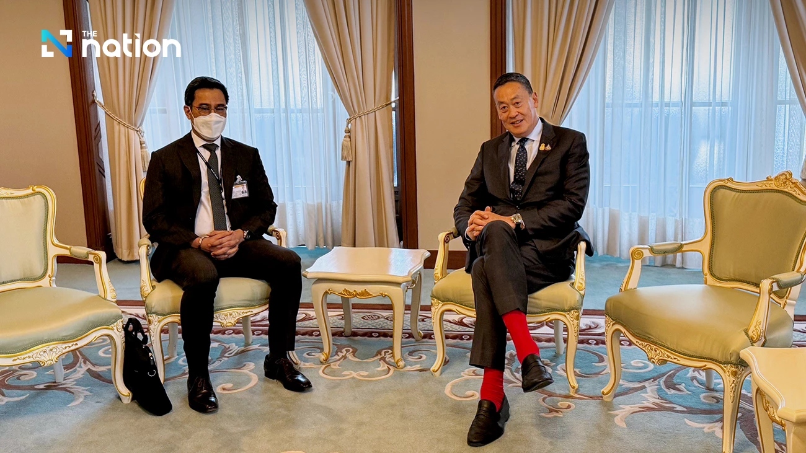
The Bank of Thailand resists government pressure for cuts and holds its key rate at 2.50% in a split 5–2 decision.
Bank of Thailand holds key interest rate at 2.50% in a 5-2 decision
A revived feasibility study for a Phang Nga airport aims to unlock tourism on the Andaman coast.
Phang Nga airport feasibility study back on track in bid to boost tourism in South
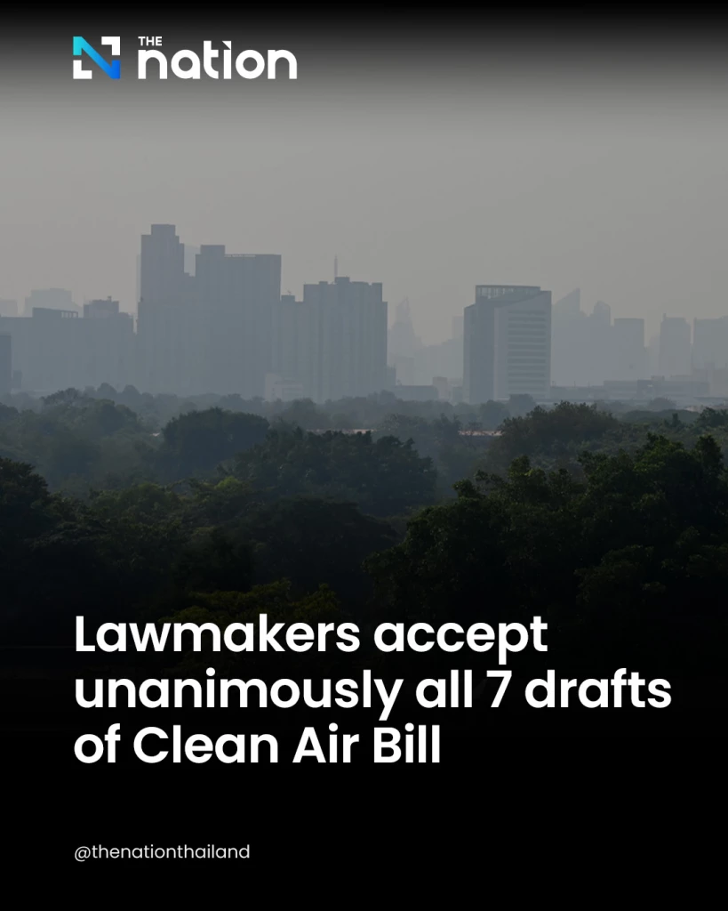
Lawmakers unanimously accept all seven drafts of the Clean Air Bill, a milestone in the fight against seasonal haze.
Lawmakers accept unanimously all 7 drafts of Clean Air Bill
Markets, commodities, and Southeast Asian politics.
Asian rice prices hit a three-year high after India bans exports, stoking food-security fears across the region.
Rice surges to three-year high as Indian export ban roils market
India's export curbs threaten to push Asian rice prices toward a decade high, compounding pressures from war and weather.
Rice prices to rise on India export curbs, adding to Ukraine, weather woes
Cambodia's Hun Sen walks back a social-media post gloating over Pita's defeat after an online backlash.
Cambodian PM walks back on Pita defeat post after Twitter storm
A looming El Niño drought in Thailand threatens global supplies of sugar and rice.
Global supplies of sugar, rice at risk from looming Thai drought
Thailand's election-winning coalition resolves its speaker dispute ahead of the prime-ministerial vote.
Thai coalition settles Speaker row as prime minister vote looms
Thailand incinerates $600 million worth of seized methamphetamine, heroin and cocaine in a show of force against traffickers.
Thailand destroys $600 million worth of seized meth, cocaine
With El Niño returning, the world's rice stockpiles face their first real stress test in years.
World's rice stockpiles will be put to the test with El Niño's return
Dry weather is set to cut Australia's next wheat crop by a third, tightening global grain supplies.
Dry weather to slash Australia's next wheat crop by a third
The Southeast Asian scam economy, reported as a regional beat.
Thai police detain a Japanese national accused of leading a Cambodia-based scam operation, part of the widening regional crackdown on fraud networks.
Thai police detain Japanese leader of scam group based in Cambodia
Thai police detain two Japanese men linked to a major scam operation in eastern Myanmar, held on immigration charges as the investigation widens.
Thai police detain two Japanese possibly over Myanmar scam hub case
Royal Thai Police Senior Inspector-General Thatchai Pitaneelaboot tells NHK that crackdowns are pushing scam groups out of Myanmar into Cambodia and Laos.
Thai police: Myanmar scam centers moving to Cambodia, Laos
First-person testimony from international victims trafficked into scam compounds along the Thai–Myanmar borderlands.
International victims caught up in scam centers along Thai-Myanmar borderlands
A 25-year-old Bangladeshi survivor recounts how a broker's job offer in Thailand ended in captivity inside a Myanmar scam compound — and how he escaped.
Bangladeshi who escaped Myanmar scam center recounts his entrapment
How foreigners are lured to Myanmar-based fraud compounds and forced to run online scams — reported through survivor accounts.
Foreigners forced to work in Myanmar-based fraud rings
The coup's fallout, from diplomacy to supply chains.
Myanmar's top diplomat joins the ASEAN foreign ministers' meeting, testing the bloc's approach to the junta after its election.
Myanmar joins ASEAN foreign ministers meeting
Coverage of the Thai foreign minister's visit to post-election Myanmar and what it signals for Bangkok's role as a broker with the junta.
Thai foreign minister visits Myanmar
Thailand's foreign minister voices cautious hope for Myanmar's democratic transition in an interview following the country's election.
FM Sihasak hopeful for democracy in Myanmar after election
An investigation tracking the Myanmar–China rare-earth supply chain — a five-fold export surge and its toxic fallout on Mekong communities downstream.
Thais anxious over Myanmar rare earths
Washington's foreign-aid freeze halts the clearance of unexploded American ordnance still killing people in Laos and Vietnam.
Trump's foreign aid pause suspends removal of US-dropped bombs in Vietnam, Laos
Courts, coalitions, and cabinets in Thailand and beyond.
Thailand seats a new cabinet under PM Paetongtarn Shinawatra, mixing fresh faces with familiar names from the political dynasties.
After the king's endorsement, Thailand has a new Cabinet but with some familiar faces
Parliament elects Thaksin's youngest daughter Paetongtarn Shinawatra as Thailand's youngest-ever prime minister, extending the Shinawatra dynasty.
Thaksin's daughter Paetongtarn Shinawatra is elected Thailand's prime minister
Analysis of Thailand's Constitutional Court and its record of dissolving elected governments — and what that means for Thai democracy.
Thai courts that have disbanded multiple governments are accused of setting back democracy
The Constitutional Court accepts a petition that could unseat PM Srettha Thavisin over a controversial cabinet appointment.
The Constitutional Court of Thailand agrees to hear a case that could imperil the prime minister
Thaksin's return from exile ignites a parole debate and reshuffles Thailand's political landscape.
Thaksin's homecoming: Parole debate and political fallout
Cambodia's Hun Sen walks back a social-media post gloating over Pita's defeat after an online backlash.
Cambodian PM walks back on Pita defeat post after Twitter storm
Thailand's election-winning coalition resolves its speaker dispute ahead of the prime-ministerial vote.
Thai coalition settles Speaker row as prime minister vote looms
Detention, refoulement, and transnational repression.
Two decades after Anocha Panjoy vanished into North Korea's abduction program, her family is still pressing Pyongyang for answers.
20 years on, Thai abductee's family still awaiting answers from North Korea
A 25-year-old Bangladeshi survivor recounts how a broker's job offer in Thailand ended in captivity inside a Myanmar scam compound — and how he escaped.
Bangladeshi who escaped Myanmar scam center recounts his entrapment
Julian Assange pleads guilty in a Saipan courtroom in a deal with the US Justice Department, ending a years-long legal saga and securing his freedom.
WikiLeaks' Assange pleads guilty to publishing US military secrets in deal that secures his freedom
Rights groups urge Thailand not to extradite a Vietnamese activist who they warn faces persecution if sent home.
Rights groups urge Thailand not to extradite Vietnamese activist, saying he's at risk if sent home
Monarchy-reform activist Netiporn 'Bung' Sanesangkhom dies in detention after a months-long hunger strike, reigniting debate over lèse-majesté detentions.
A monarchy reform activist in Thailand dies in detention after a monthslong hunger strike
Police arrest a journalist and a photographer over their coverage of protest graffiti, raising press-freedom alarms in Thailand.
Police arrest journalist, photographer over coverage of graffiti in March 2023
Wire-speed coverage of the region's biggest stories.
Thai police detain a Japanese national accused of leading a Cambodia-based scam operation, part of the widening regional crackdown on fraud networks.
Thai police detain Japanese leader of scam group based in Cambodia
Twenty Thai crew members arrive home after their cargo ship was attacked near the Strait of Hormuz, caught in the region's shipping crisis.
20 Thai crew repatriated after cargo ship attacked near Strait of Hormuz
Thai police detain two Japanese men linked to a major scam operation in eastern Myanmar, held on immigration charges as the investigation widens.
Thai police detain two Japanese possibly over Myanmar scam hub case
Six people found dead in a Bangkok Grand Hyatt suite were poisoned with cyanide, forensic tests confirm, in a case that gripped the region.
Traces of cyanide are found in the blood of Vietnamese and Americans found dead in a Bangkok hotel
Survivors describe the seconds of violent turbulence that killed one passenger and put twenty in intensive care.
'Sheer terror': Passengers describe turbulence-hit flight that put 20 in intensive care
Passengers from the turbulence-stricken Singapore Airlines flight reach Singapore after the emergency landing in Bangkok.
Most of passengers from battered Singapore Airlines jetliner arrive in Singapore from Bangkok
Thailand incinerates $600 million worth of seized methamphetamine, heroin and cocaine in a show of force against traffickers.
Thailand destroys $600 million worth of seized meth, cocaine
Food security, drought, and environmental policy.
Lawmakers unanimously accept all seven drafts of the Clean Air Bill, a milestone in the fight against seasonal haze.
Lawmakers accept unanimously all 7 drafts of Clean Air Bill
Asian rice prices hit a three-year high after India bans exports, stoking food-security fears across the region.
Rice surges to three-year high as Indian export ban roils market
India's export curbs threaten to push Asian rice prices toward a decade high, compounding pressures from war and weather.
Rice prices to rise on India export curbs, adding to Ukraine, weather woes
A looming El Niño drought in Thailand threatens global supplies of sugar and rice.
Global supplies of sugar, rice at risk from looming Thai drought
With El Niño returning, the world's rice stockpiles face their first real stress test in years.
World's rice stockpiles will be put to the test with El Niño's return
Dry weather is set to cut Australia's next wheat crop by a third, tightening global grain supplies.
Dry weather to slash Australia's next wheat crop by a third
Megaprojects, markets, and trade.
Binance's CEO predicts Bitcoin will hit $80,000 as the crypto market rebounds from its long winter.
Binance CEO sees Bitcoin soaring to $80,000 this year
Officials expect a surge in cargo traffic from northern Thailand to China through the Mekong's Chiang Saen Port.
Increase in northern Thai ship traffic to China is coming: Official
Parliament endorses the Southern land-bridge megaproject despite environmental and cost concerns.
Land bridge project gets the nod from Parliament despite concerns
The Bank of Thailand resists government pressure for cuts and holds its key rate at 2.50% in a split 5–2 decision.
Bank of Thailand holds key interest rate at 2.50% in a 5-2 decision
A revived feasibility study for a Phang Nga airport aims to unlock tourism on the Andaman coast.
Phang Nga airport feasibility study back on track in bid to boost tourism in South
Features on how Thailand lives, eats, and ages.
A resurfaced section of the WWII-era Death Railway offers a rare glimpse into one of the darkest chapters of Thailand's wartime history.
Resurfaced Death Railway offers rare glimpse into dark history
How Thai diners' appetite for Japanese food has grown far beyond sushi — and how restaurants are scrambling to keep up with demand for variety.
Thailand's fans of washoku crave variety
Inside Bangkok's Death Fest, where a rapidly aging Thailand confronts mortality through end-of-life planning workshops and death-positive events.